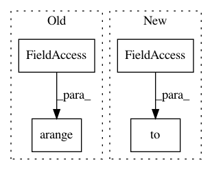

5a9c6aa03ea55ad85601c0c33ff762d6a2e2c7fa,examples/node2vec.py,,,#,10
Before Change
path = osp.join(osp.dirname(osp.realpath(__file__)), "..", "data", dataset)
dataset = Planetoid(path, dataset)
data = dataset[0]
loader = DataLoader(torch.arange(data.num_nodes), batch_size=128, shuffle=True)
device = "cuda" if torch.cuda.is_available() else "cpu"
model = Node2Vec(data.num_nodes, embedding_dim=128, walk_length=20,
After Change
data = dataset[0]
device = "cuda" if torch.cuda.is_available() else "cpu"
model = Node2Vec(data.edge_index, embedding_dim=128, walk_length=20,
context_size=10, walks_per_node=10, num_negative_samples=5,
sparse=True).to(device)
loader = model.loader(batch_size=128, shuffle=True, num_workers=6)
optimizer = torch.optim.SparseAdam(model.parameters(), lr=0.01)
In pattern: SUPERPATTERN
Frequency: 3
Non-data size: 4
Instances
Project Name: rusty1s/pytorch_geometric
Commit Name: 5a9c6aa03ea55ad85601c0c33ff762d6a2e2c7fa
Time: 2020-05-23
Author: matthias.fey@tu-dortmund.de
File Name: examples/node2vec.py
Class Name:
Method Name:
Project Name: asappresearch/sru
Commit Name: faf3aa876462323f2fa721ebd633752d6489808f
Time: 2020-09-18
Author: taolei@csail.mit.edu
File Name: sru/modules.py
Class Name: SRU
Method Name: forward
Project Name: dpressel/mead-baseline
Commit Name: 3218a3987ef9f83d1ad5efd6f96d6f6c741c3cfa
Time: 2019-09-27
Author: dpressel@gmail.com
File Name: python/eight_mile/pytorch/layers.py
Class Name:
Method Name: viterbi